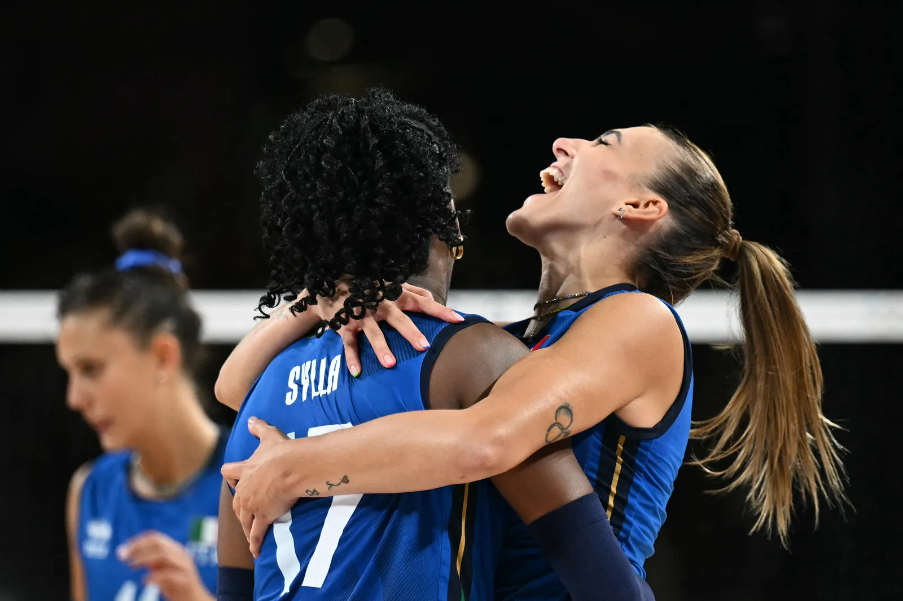
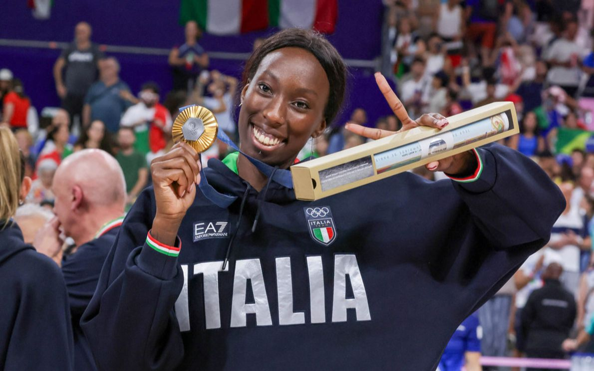
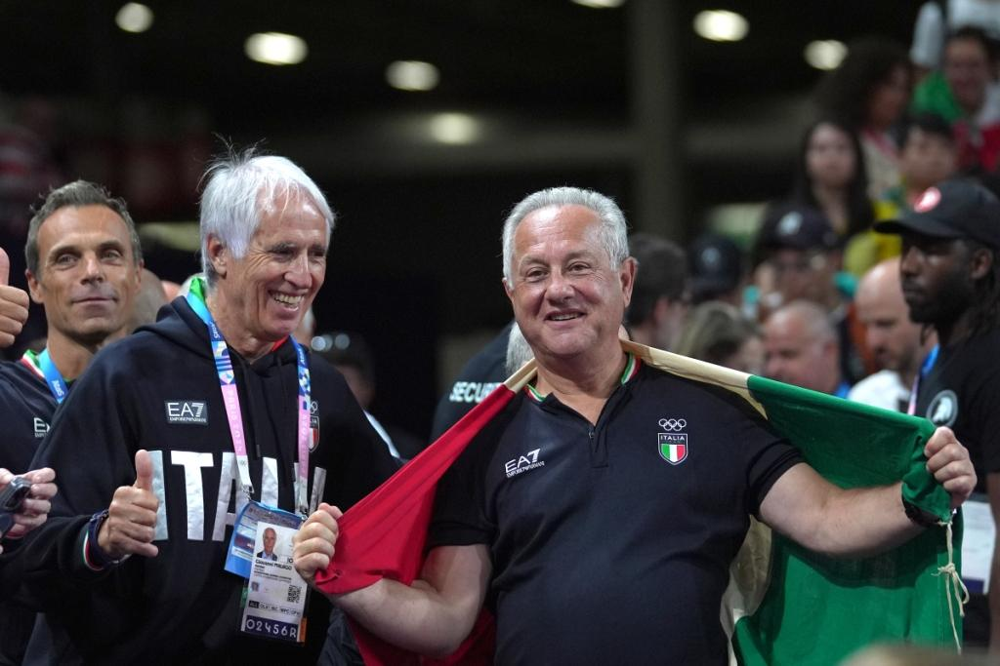
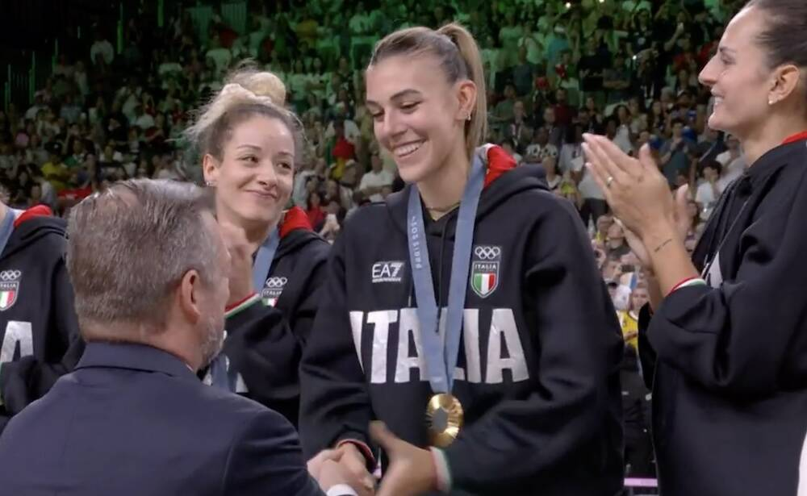
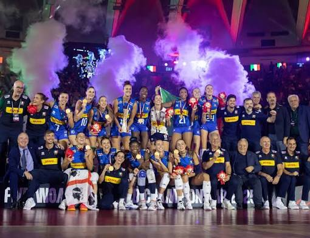

Curiosità sul percorso delle Azzurre
Oltre ai risultati in campo, il percorso dell’Italia a Parigi 2024 è stato pieno di momenti curiosi, frasi diventate simboliche e piccoli retroscena raccontati dalle protagoniste nelle interviste.
Queste curiosità rendono la vittoria ancora più interessante, perché mostrano non solo la parte sportiva, ma anche il lato umano della squadra: il modo di vivere il torneo, la mentalità del gruppo e le emozioni dopo la medaglia d’oro.
Il “torneo della baguette”
Una delle curiosità più simpatiche del percorso olimpico riguarda il soprannome dato dalle Azzurre al torneo. Alessia Orro, parlando con i giornalisti, ha raccontato che per loro le Olimpiadi erano diventate il “torneo della baguette”.
Il nome nasceva in modo scherzoso dal fatto che i Giochi si svolgevano a Parigi, città collegata nell’immaginario anche alla baguette francese. È una curiosità leggera, ma fa capire il clima del gruppo: anche in un torneo pieno di pressione, le giocatrici riuscivano a vivere alcuni momenti con ironia.
Questa frase è diventata un piccolo simbolo del lato più spontaneo della squadra. Dietro una medaglia olimpica ci sono concentrazione e lavoro, ma anche complicità, battute e modi per alleggerire la tensione.


Le parole di Paola Egonu dopo l’oro
Dopo la finale vinta contro gli Stati Uniti, Paola Egonu ha raccontato tutta la sua emozione. In un’intervista ha detto di vivere “un’emozione indescrivibile” e di essere “fierissima” per quello che la squadra aveva fatto.
Le sue parole mostrano quanto questa vittoria fosse importante non solo dal punto di vista sportivo, ma anche personale. Egonu è stata una delle protagoniste assolute del torneo e alla fine è stata premiata come MVP, cioè miglior giocatrice della competizione.
Il suo percorso è stato uno degli esempi più forti della crescita dell’Italia: potenza in attacco, responsabilità nei momenti decisivi e capacità di trascinare la squadra nelle partite più importanti.
Il metodo Velasco
Un altro elemento importante è stato il ruolo di Julio Velasco. Dopo la finale, parlando della sua esperienza con la Nazionale femminile, ha spiegato che lavorare con le donne lo aveva migliorato molto come allenatore.
Questa frase è interessante perché mostra il rapporto costruito tra allenatore e squadra. Velasco non ha dato solo indicazioni tecniche, ma ha lavorato molto sulla mentalità: restare concentrate, non pensare troppo al risultato finale e affrontare una partita alla volta.
La sua gestione ha aiutato le Azzurre a non farsi schiacciare dalla pressione. Anche quando il torneo si avvicinava alle partite decisive, la squadra è rimasta ordinata, concreta e consapevole dei propri mezzi.


I premi personali delle Azzurre
La forza dell’Italia si è vista anche nei premi individuali assegnati alla fine del torneo. Paola Egonu è stata nominata MVP del torneo e anche miglior opposto.
Non è stata l’unica italiana premiata: Alessia Orro è stata scelta come miglior palleggiatrice, Myriam Sylla come miglior schiacciatrice, Anna Danesi come miglior centrale e Monica De Gennaro come miglior libero.
Questo dato è molto importante perché conferma che l’Italia non ha vinto grazie a una sola giocatrice, ma grazie a un gruppo completo, forte in tutti i reparti: attacco, regia, difesa, muro e ricezione.
Un oro mai conquistato prima
La vittoria di Parigi 2024 è storica perché si tratta del primo oro olimpico della pallavolo italiana. Prima di questa finale, nessuna nazionale italiana di volley, né maschile né femminile, era mai riuscita a vincere il titolo olimpico.
Questo rende il successo delle Azzurre ancora più speciale. Non è stata solo una medaglia importante per la squadra, ma un risultato che ha cambiato la storia della pallavolo italiana.
La finale contro gli Stati Uniti è stata vinta 3-0, con una superiorità evidente. Per questo l’oro non è sembrato casuale: è stato il risultato di un torneo giocato con continuità, crescita e grande sicurezza.
